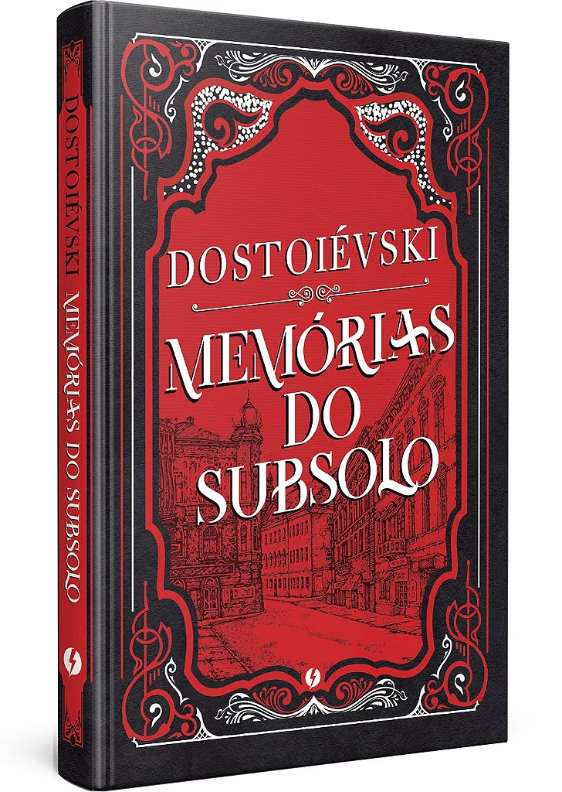

Em Memórias do Subsolo, obra-prima de Fiódor Dostoiévski, o protagonista anônimo apresenta uma das características mais fascinantes e perturbadoras da literatura moderna: a hiperconsciência.
Longe de ser retratada como uma virtude iluminadora, essa capacidade extrema de analisar a si mesmo e ao mundo funciona, na mente do narrador, como uma verdadeira doença crônica que o isola
da humanidade e o condena a uma existência subterrânea.
Para o Homem do Subsolo, pensar demais é o oposto de viver. Enquanto o "homem comum" ou o "homem de ação" age de forma espontânea, guiado por impulsos, certezas simples ou convenções sociais, o
indivíduo hiperconsciente permanece eternamente paralisado. Cada vez que ele tenta tomar uma atitude ou sentir uma emoção genuína, sua mente disseca o próprio impulso até reduzi-lo ao nada.
Ele busca uma "causa primeira" que justifique suas ações, mas cada justificativa revela outra mais profunda e contraditória, criando um labirinto infinito de dúvidas que resulta na mais completa inércia.
Essa lucidez exacerbada também gera um profundo abismo moral e psicológico. O protagonista enxerga com clareza brutal suas próprias mesquinharias, covardias e contradições, mas essa percepção não o redime nem o impulsiona a mudar.
Pelo contrário, ela alimenta um ciclo vicioso de autodesprezo e orgulho ferido. Ele se sente intelectualmente superior àqueles que vivem na ignorância das certezas cotidianas, mas, ao mesmo tempo, inveja a capacidade que essas pessoas
têm de simplesmente existir e agir sem o peso esmagador da autoconsciência.
Além disso, a hiperconsciência transforma até o sofrimento em um palco de complexidade perversa. Incapaz de encontrar prazer na vida prática ou nas relações humanas — como fica evidente em seu encontro trágico com a jovem Liza —,
o Homem do Subsolo passa a extrair uma espécie de satisfação amarga e estética da própria dor e humilhação. A consciência hipertrofiada não apenas observa o sofrimento, mas o intensifica, transformando cada pequeno constrangimento
em um drama existencial gigantesco.
Por meio desse personagem, Fiódor Dostoiévski antecipa grandes debates da psicologia e do existencialismo moderno. O Homem do Subsolo prova que o ser humano não é movido apenas pela lógica ou pelo próprio interesse, mas por um desejo irracional
de afirmar sua liberdade, mesmo que seja através da autodestruição. Sua hiperconsciência, portanto, é o retrato definitivo da angústia moderna: a tragédia de uma mente capaz de compreender a profundeza do abismo humano, mas totalmente
impotente para escapar dele.
TRECHOS E CITAÇÔES:
"Observai-vos melhor, senhores, e compreendereis que assim é. Imaginava, para mim mesmo, aventuras e inventava uma vida, para viver ao menos de algum modo. Quantas vezes me aconteceu, por exemplo, ficar ofendido não por um motivo determinado,
mas intencionalmente!"
Esse trecho de Memórias do Subsolo, de Dostoiévski, mostra o que acontece quando alguém se sente tão desconectado da realidade que precisa fabricar emoções na própria cabeça para sentir que está vivo. Muita gente passa por isso sem ter coragem de admitir. Não é apenas sobre "ter imaginação fértil", mas sobre usar a mente como um refúgio — e às vezes como uma arma contra si mesmo — quando a vida real parece parada, fria ou sem sentido.
Logo após faz outra reflexão:
Mas como sabeis que o homem não apenas pode, mas deve ser assim transformado? De onde concluís que à vontade humana é tão indispensavelmente necessário corrigir-se? Numa palavra, como sabeis que uma tal correção realmente trará vantagem ao homem?
Esse trecho de Memórias do Subsolo captura perfeitamente o incômodo de quem olha para as regras do mundo e pensa: "Quem decidiu que esse é o jeito certo de viver?". É o desabafo de todo mundo que já se sentiu pressionado a "se consertar" ou a seguir
uma fórmula pronta de felicidade.
Muita gente carrega essa exata revolta por dentro, mesmo sem dizer em voz alta. O personagem está questionando aquela ideia de que o ser humano precisa ser domado, corrigido e encaixado num padrão racional para ser "bom" ou "bem-sucedido".
Por essas e outras reflexões do livro,Memórias do Subsoloacaba funcionando quase como um espelho desconfortável. O que torna essa leitura tão marcante é a forma como Dostoiévski arranca todas as máscaras sociais e coloca no papel exatamente
aquilo que as pessoas costumam esconder até de si mesmas.
Quem lê esse livro e se identifica com ele percebe que existe um alívio estranho em ver esses pensamentos expostos. Ele mostra que a mente humana não é limpa, organizada ou sempre voltada para o bem-estar. Pelo contrário, ela é cheia de teimosia, orgulho e contradições.
É por isso que essa obra atravessa o tempo e continua tocando tanta gente. Ela não oferece conselhos fáceis nem fórmulas de superação. Ela apenas valida o fato de que existir, pensar e sentir de verdade
é um processo bagunçado — e que às vezes, a única forma de preservar a própria liberdade é recusar as respostas prontas que o mundo tenta impor.
No livro Memórias do Subsolo, de Fiódor Dostoiévski, o Palácio de Cristal representa o ideal de uma sociedade perfeita, governada pela razão, pela ciência e pelo cálculo matemático.
O narrador critica essa ideia porque acredita que o ser humano não quer viver como uma simples engrenagem previsível, mas sim preservar seu livre-arbítrio, mesmo que isso signifique escolher o próprio sofrimento.
Para os racionalistas, o ser humano não passa de uma tecla de piano sujeita às leis da natureza, onde a regra absoluta é sempre 2 + 2 = 4
[ARQUIVO CONFIDENCIAL - SÃO PETERSBURGO, 1864]
Identidade: HOMEM DO SUBSOLO
Estado do sujeito: Doente. Mau.
Conclusão: A recusa em aceitar 2 + 2 = 4.
Comprar um livro?
Adquirir um livro
Aproveite a oportunidade de adquirir livros e lê-los enquanto toma sua H2O(água)
Ou enquanto toma seu C2H5O- + H+ → C2H5OH (vinho)

© site por Manu